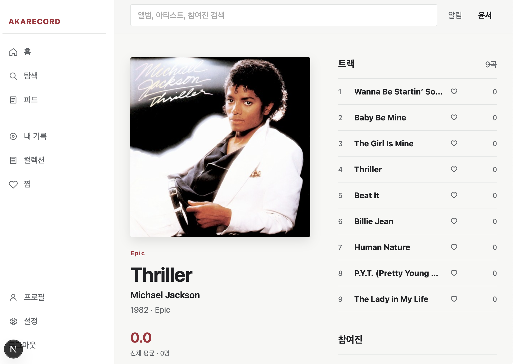
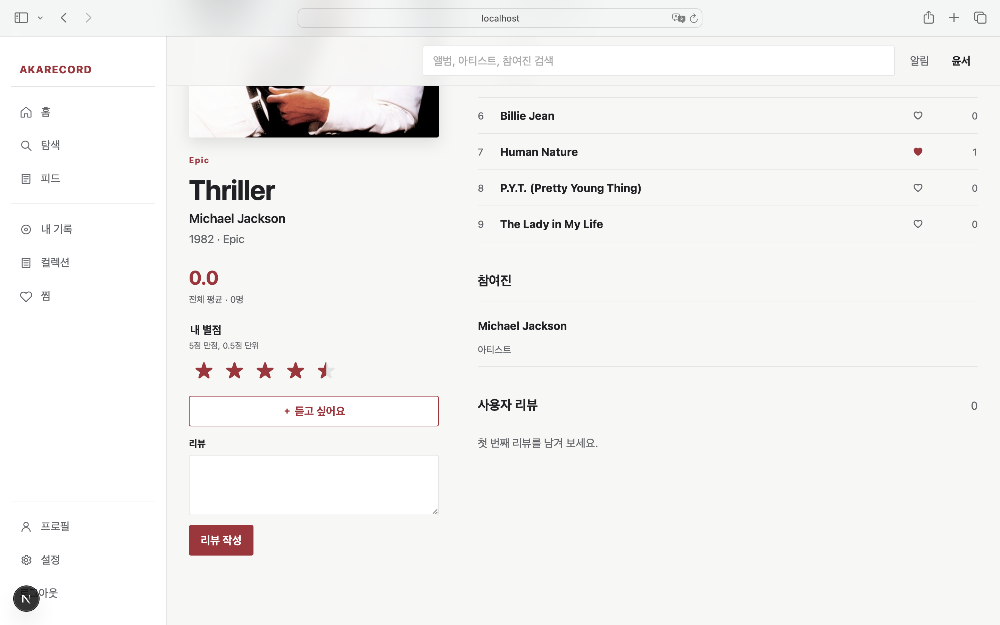
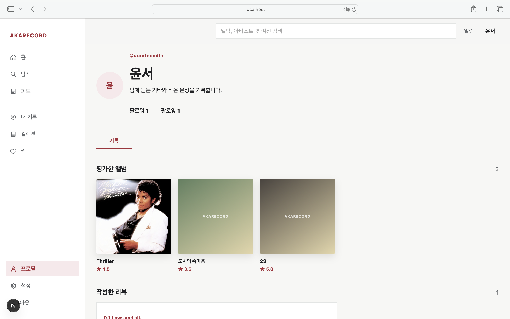

아카레코드(AKARECORD)는 앨범을 듣고 감상을 나눌 곳이 없다는 아쉬움에서 시작된 1인 프로젝트입니다.
사용자는 청취한 앨범에 별점을 남기고, 감상평을 적으며 자신만의 청취 기록을 아카이빙 할 수 있어요.
평소 스트리밍 사이트엔 참여진과 크레딧이 자세히 제공되지 않는 부분에 아쉬움을 느꼈어요. 앨범 상세 페이지에서 참여진들을 확인하고, 그들의 다른 작업물들을 손쉽게 탐색할 수 있도록 구현했습니다.



현재 코덱스와 함께 개발 중입니다.
(26년 말을 목표로 열심히 토큰을 태우고 있어요)
임동우 인스타그램 팔로우하고 베타 테스터 되기